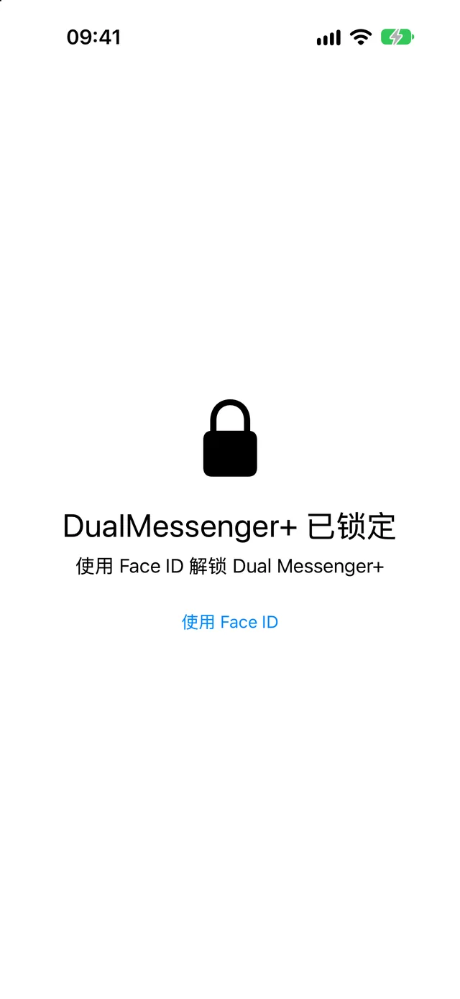
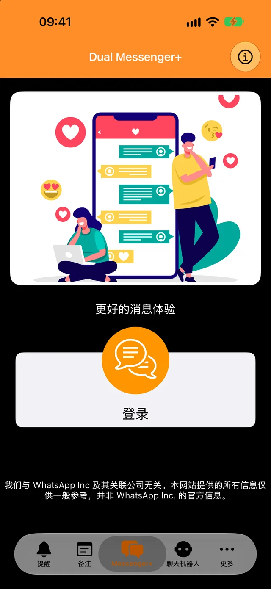
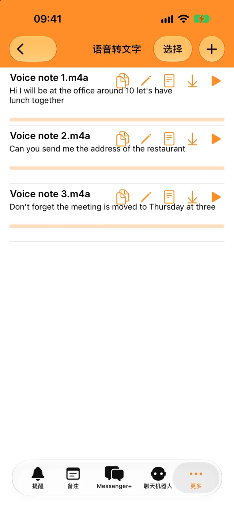
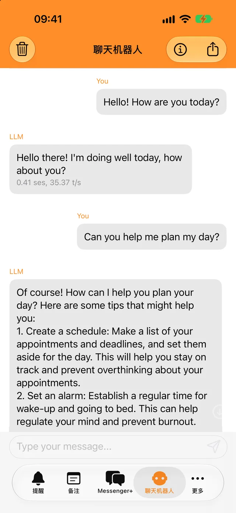
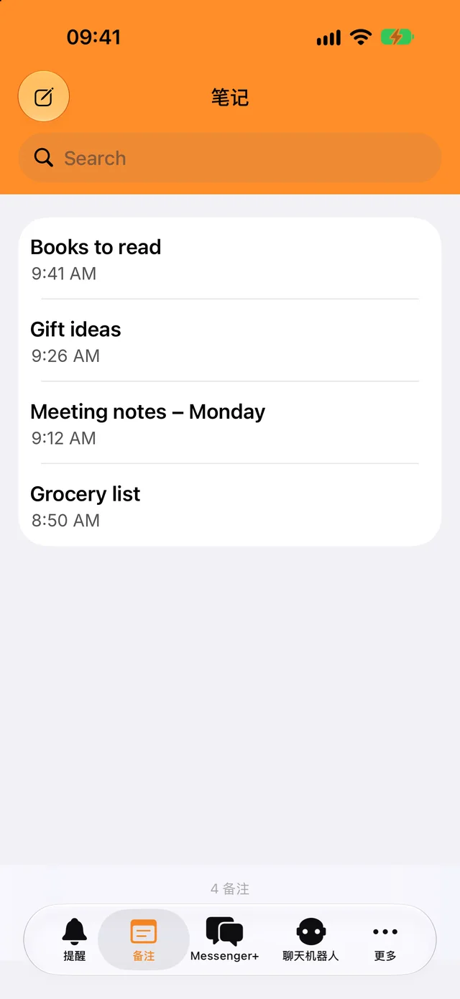

用 Face ID 或密码锁定应用
只有你能打开应用和你的聊天。可以选择立即锁定，或几分钟后再锁定。
几秒钟添加第二个账号，工作和私人聊天分开管理。
免费下载。适用于 iPhone、iPad 和 iPhone Duo。

为聊天加一把锁，再加上几个日常小工具，全都在同一个应用里。

只有你能打开应用和你的聊天。可以选择立即锁定，或几分钟后再锁定。

用你的语言转写语音消息和音频文件，文字可复制到任何地方。

离线也能快速提问。你和机器人的对话不会离开你的手机。

随手记下要点，用搜索快速找到，提醒到点时还会收到通知。
你需要用一下装有第二个 WhatsApp 账号的那部手机，只要一小会儿。
轻点“登录”，屏幕上会出现一个二维码。
前往“设置”，然后进入“已关联的设备”，再轻点“关联设备”。
用那部手机对准二维码，你的聊天就会在 Dual Messenger+ 中打开。
只要你至少每 14 天在手机上使用一次 WhatsApp，WhatsApp 就会让已关联的设备保持登录状态。
Dual Messenger+ 没有任何能看到你消息的服务器。无需创建账号，应用里也没有广告和跟踪器。
笔记、提醒、录音和与机器人的对话都保存在你的 iPhone 或 iPad 上。
你不用向我们提供姓名、电子邮件地址或电话号码。
Face ID 和 Touch ID 由你的设备处理。应用绝不会收到生物识别数据。